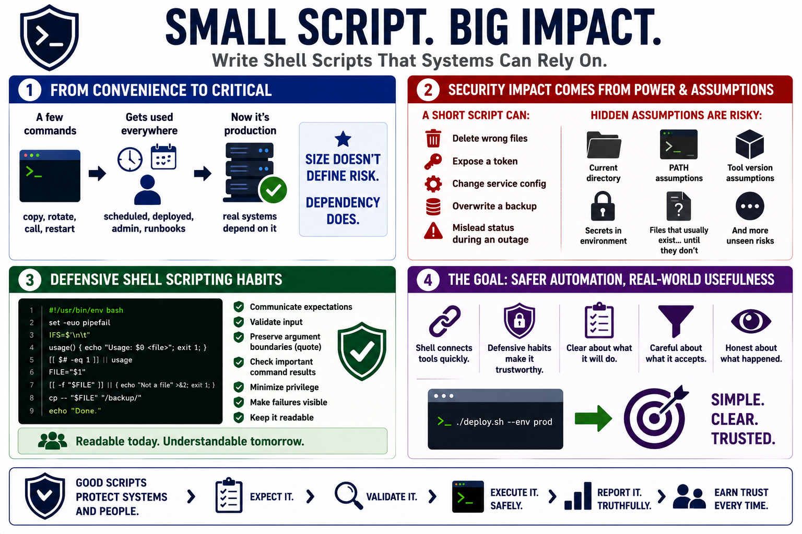

Defensive Shell Programming in Real Systems
Connecting to LMS... Progress: in progress

Narration
Shell scripts often begin as convenience tools. A developer writes a few commands to copy a file, rotate output, call a cloud tool, or restart a service. Over time, that same script gets scheduled, added to deployment automation, run by an administrator, or copied into an incident response runbook. It may still look small, but it may now be production software because real systems depend on it.
The security impact of a script comes from what it can touch and what permissions it inherits, not from its length. A short script can delete the wrong files, expose a token, change service configuration, overwrite a backup, or produce misleading status during an outage. A script can also depend on hidden assumptions: the current directory, a particular PATH, a specific tool version, a secret in the environment, or a file that usually exists until it does not.
Defensive shell programming means writing automation that behaves predictably under stress. The script should communicate what it expects, validate input, preserve argument boundaries, check important command results, minimize unnecessary privilege, and make failures visible. It should be readable enough that a future maintainer can understand the intent before running it in a sensitive environment.
The goal is safer automation without unnecessary complexity. Shell remains useful because it connects operating system tools quickly. Defensive habits make that usefulness more trustworthy. A good script does not need to be fancy; it needs to be clear about what it will do, careful about what it accepts, and honest about what happened.